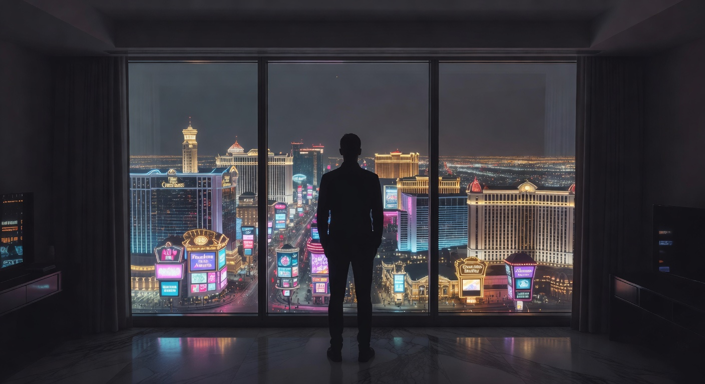
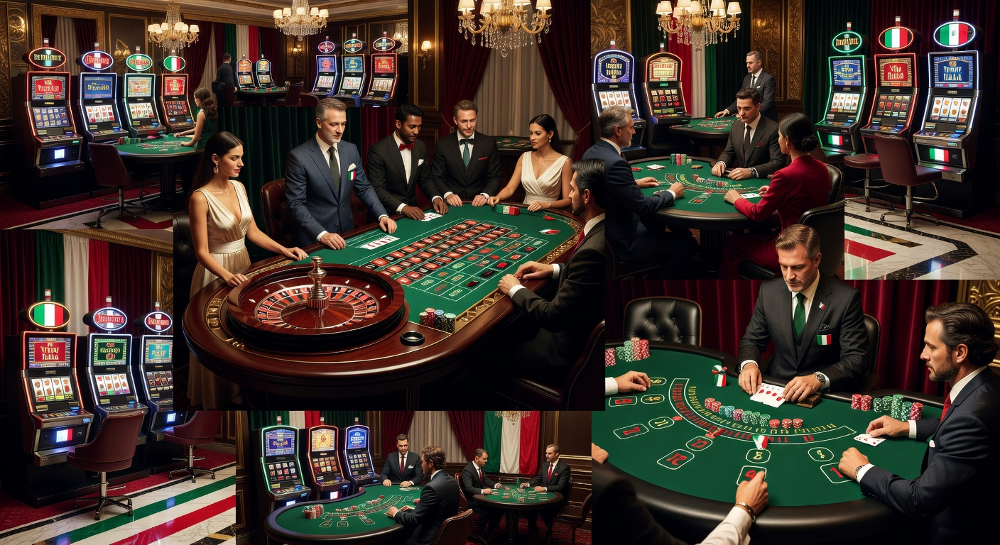
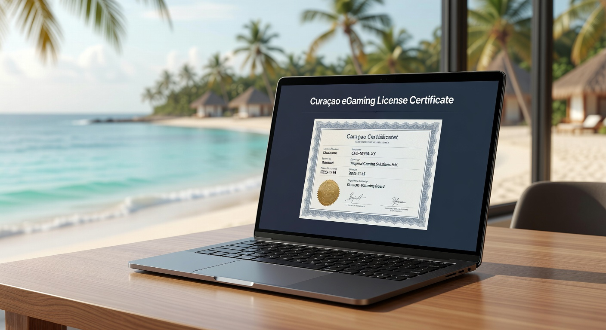
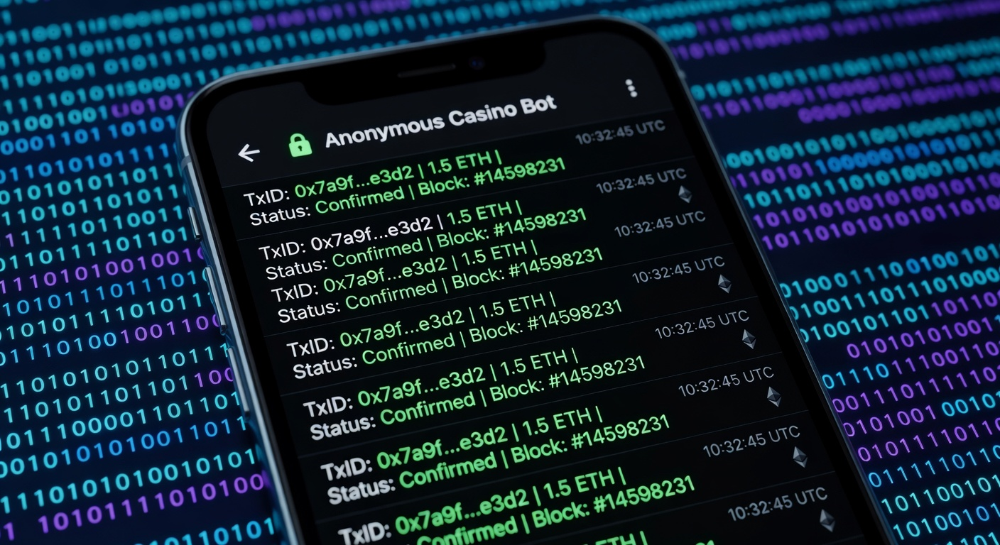

Casino stranieri che accettano italiani senza documento: Guida ai siti No-KYC 2026
Nel panorama del gioco digitale del 2026, la ricerca di casino stranieri che accettano italiani senza documento è diventata una priorità per migliaia di appassionati. La crescente richiesta di privacy e la volontà di evitare lunghe procedure burocratiche hanno spinto il mercato verso soluzioni più agili e meno invasive. In questa guida completa, esploreremo come funzionano queste piattaforme, quali sono i vantaggi reali e come muoversi in sicurezza tra le numerose opzioni disponibili oggi sul web.
Il concetto di giocare senza dover inviare la scansione della propria carta d'identità o del passaporto non è più un miraggio. Grazie all'evoluzione delle tecnologie blockchain e dei sistemi di pagamento istantanei, molti operatori internazionali permettono l'accesso alle loro sale virtuali in pochi secondi. I casino stranieri che accettano italiani senza documento rappresentano l'avanguardia di un settore che mette l'utente al centro, garantendo un'esperienza fluida e immediata che i circuiti tradizionali faticano a replicare.
Esploreremo nel dettaglio le licenze che regolano questi siti, i software provider più rinomati come Pragmatic Play o Evolution Gaming, e vedremo come i siti non aams senza documento stiano ridefinendo gli standard di efficienza nel 2026. Non si tratta solo di saltare un passaggio amministrativo, ma di abbracciare una filosofia di intrattenimento basata sulla fiducia e sulla velocità tecnologica.
Cosa si intende per casino online senza invio di documenti
Quando parliamo di un casino online che opera senza richiedere documenti, ci riferiamo a piattaforme che non impongono la procedura KYC (Know Your Customer) al momento dell'iscrizione o, in alcuni casi, nemmeno durante la fase di prelievo delle vincite. In un tradizionale ambiente ADM (ex AAMS), il giocatore è obbligato a caricare un documento d'identità entro 30 giorni, pena la sospensione dell'account. Nei casino stranieri che accettano italiani senza documento, questo vincolo viene rimosso, permettendo di iniziare a puntare immediatamente dopo aver creato un profilo con una semplice email.
Questa flessibilità è resa possibile dall'adozione di metodi di pagamento che fungono essi stessi da verifica indiretta o che permettono l'anonimato totale. Molti di questi siti sono definiti "No-Account" o "Pay N Play", sebbene questa tecnologia si sia evoluta drasticamente nel 2026 per includere sistemi basati su criptovalute. L'obiettivo primario di un casino stranieri che accettano italiani senza documento è eliminare le frizioni all'ingresso, rendendo il gioco un'attività puramente ludica e priva di intoppi documentali.
È importante sottolineare che "senza documento" non significa senza regole. Questi operatori seguono comunque normative internazionali rigorose fornite da enti come la Curaçao eGaming o la Malta Gaming Authority, assicurando che i giochi siano equi e che i fondi degli utenti siano protetti da sistemi di crittografia avanzati. La differenza risiede esclusivamente nel modo in cui l'identità dell'utente viene gestita, privilegiando la protezione dei dati personali sopra ogni altra cosa.
Perché i giocatori italiani scelgono piattaforme estere No-KYC

Le ragioni dietro il successo dei casino stranieri che accettano italiani senza documento nel 2026 sono molteplici e toccano diversi aspetti dell'esperienza utente. In primo luogo, vi è una crescente stanchezza nei confronti dei sistemi di controllo centralizzati. Molti giocatori italiani percepiscono le richieste di SPID o di documentazione eccessiva come un'intrusione nella propria sfera privata. In un'epoca in cui i dati personali sono merce preziosa, evitare di caricarli su server multipli è una scelta di sicurezza proattiva.
Inoltre, la velocità è un fattore determinante. Chi sceglie i casino stranieri che accettano italiani senza documento vuole giocare subito, senza attendere le 24-48 ore necessarie per la convalida del conto. Nel 2026, l'istantaneità è diventata lo standard: se posso ordinare cibo o prenotare un volo in un clic, perché dovrei aspettare giorni per piazzare una scommessa sulla mia slot preferita? Queste piattaforme rispondono esattamente a questo bisogno di immediatezza.
Infine, non si può ignorare il fattore dell'offerta ludica. Molto spesso, i casino stranieri che accettano italiani senza documento vantano cataloghi di titoli molto più ampi rispetto alle controparti nazionali. Dalle slot con meccaniche innovative ai game show dal vivo più spettacolari, l'offerta internazionale è semplicemente più vasta e variegata, attirando chi cerca un'esperienza di alto livello non limitata dai regolamenti locali più restrittivi.
Privacy e protezione dei dati personali
La privacy è il pilastro su cui poggiano i casino stranieri che accettano italiani senza documento. In un mondo digitale sempre più sorvegliato, mantenere l'anonimato durante le sessioni di gioco online è un diritto che molti utenti intendono esercitare. Utilizzando piattaforme che non richiedono l'invio di documenti sensibili, si riduce drasticamente il rischio di furto d'identità o di data breach che potrebbero esporre informazioni personali delicate a malintenzionati.
I protocolli di sicurezza adottati da questi siti nel 2026 sono all'avanguardia. Utilizzano sistemi di anonimizzazione dei dati e non conservano informazioni che possano ricondurre direttamente all'identità fisica dell'utente se non strettamente necessario per scopi legali internazionali. Questo approccio rende il casino stranieri che accettano italiani senza documento una scelta ideale per chi desidera separare nettamente la propria attività finanziaria principale dal budget dedicato all'intrattenimento online.
Registrazione immediata e senza attese
Dimenticate i lunghi moduli di iscrizione dove inserire codice fiscale, indirizzo di residenza e numero di telefono. Nei casino stranieri che accettano italiani senza documento, la registrazione avviene spesso tramite un solo passaggio. Molte piattaforme permettono di collegare direttamente il proprio wallet di criptovalute o di utilizzare un servizio di posta elettronica criptato per creare un account in meno di trenta secondi. Questa efficienza è uno dei motivi per cui il volume di gioco su queste piattaforme ha superato ogni record nel 2026.
L'assenza di attese non riguarda solo l'inizio, ma anche i momenti successivi. Non dover attendere l'approvazione dei documenti significa che anche il primo prelievo può essere elaborato istantaneamente. Molti casino stranieri che accettano italiani senza documento si vantano di processare i pagamenti in meno di 10 minuti, un traguardo impensabile per le piattaforme che devono verificare manualmente ogni singolo file inviato dagli utenti.
Accesso al gioco per chi è in autoesclusione AAMS
Un altro aspetto rilevante riguarda i giocatori che si trovano nel registro dell'autoesclusione trasversale in Italia. Sebbene l'autoesclusione sia uno strumento fondamentale per la tutela del giocatore, talvolta gli utenti sentono di aver superato il periodo critico ma si trovano bloccati per tempi eccessivamente lunghi dalla burocrazia nazionale. I casino stranieri che accettano italiani senza documento offrono una via d'uscita per chi desidera rientrare nel mondo del gaming in modo consapevole e indipendente, senza dover attendere lo sblocco manuale dai registri centralizzati.
È fondamentale, tuttavia, che l'utente mantenga sempre un approccio responsabile. Anche nei casino stranieri che accettano italiani senza documento, la maggior parte dei siti offre strumenti di auto-limitazione volontaria. La libertà offerta da queste piattaforme estere legali deve sempre essere accompagnata da una gestione oculata del proprio bankroll, specialmente nel contesto del 2026 dove l'offerta è così vasta e stimolante.
Classifica dei migliori casino stranieri che accettano italiani senza documento

Nel 2026, la competizione tra gli operatori internazionali ha portato alla nascita di siti di altissima qualità. Abbiamo selezionato per voi le piattaforme che si distinguono non solo per l'assenza di KYC obbligatorio, ma anche per l'affidabilità e la generosità delle promozioni. Ogni casino stranieri che accettano italiani senza documento presente in questa lista è stato testato per garantire pagamenti puntuali e un'esperienza di gioco equa.
Tra le opzioni più interessanti del momento, troviamo brand che hanno investito massicciamente nell'integrazione tecnologica e nel supporto clienti. Ecco una panoramica dei leader del settore:
| Brand | Vantaggio Principale | Bonus Disponibile | Link Sicuro |
|---|---|---|---|
| Millioner | Prelievi istantanei Crypto | 100% fino a 1000€ | Visita Millioner |
| Roulettino | Miglior catalogo Slot 2026 | 200 Free Spins | Visita Roulettino |
| Wyns | Senza limiti di prelievo | Bonus Cashback 20% | Visita Wyns |
| Kinbet | Ottime quote scommesse | Bonus Sport 200€ | Visita Kinbet |
| Dragonia | Interfaccia Next-Gen | Pacchetto fino a 1500€ | Visita Dragonia |
Millioner: innovazione e rapidità
Il brand Millioner si è imposto come uno dei casino stranieri che accettano italiani senza documento più apprezzati grazie alla sua infrastruttura tecnica di prim'ordine. Qui la velocità non è un'opzione, ma la norma. Grazie a un sistema di gestione dei pagamenti completamente automatizzato, i giocatori possono godere di un'esperienza senza attriti, focalizzandosi solo sul divertimento. La piattaforma supporta oltre 50 diverse criptovalute, rendendola un punto di riferimento per i crypto-enthusiast nel 2026.
Oltre alla rapidità, Millioner offre una selezione di giochi che include i titoli più caldi dei migliori studi di sviluppo mondiali. Essendo un casino stranieri che accettano italiani senza documento, permette di testare le demo dei giochi senza nemmeno effettuare il login, un tocco di trasparenza che i giocatori apprezzano molto. La sicurezza è garantita da licenze internazionali che monitorano costantemente l'equità degli algoritmi RNG.
Roulettino: il paradiso delle slot
Per gli amanti delle rulliere, Roulettino rappresenta la scelta ideale tra i casino stranieri che accettano italiani senza documento. Con oltre 8.000 titoli in catalogo, è difficile non trovare la propria slot preferita. Dalle classiche "Fruit Machine" alle più complesse slot Megaways con grafiche 3D mozzafiato, Roulettino collabora con colossi come NetEnt, Play'n GO e Nolimit City. La navigazione è intuitiva e ottimizzata per dispositivi mobile, permettendo di giocare ovunque ci si trovi.
Un altro punto di forza di questo casino stranieri che accettano italiani senza documento è il suo programma fedeltà. A differenza di altri siti che richiedono documenti per accedere ai livelli VIP, Roulettino premia l'attività pura. Più giochi, più sali di livello, sbloccando premi personalizzati e limiti di puntata più elevati. È l'esempio perfetto di come un casino con deposito minimo 5 euro senza documento possa offrire un valore immenso anche ai piccoli scommettitori.
Wyns: bonus senza paragoni
Se cercate le promozioni più ricche, Wyns è il nome da tenere d'occhio tra i casino stranieri che accettano italiani senza documento nel 2026. Questo operatore ha deciso di investire il budget risparmiato dalle lunghe procedure di verifica manuale direttamente nei bonus per gli utenti. Il loro sistema di "Wager-Free" bonus è particolarmente apprezzato: bonus che non hanno requisiti di scommessa impossibili da soddisfare, permettendo di prelevare le vincite molto più facilmente.
Wyns si distingue anche per l'assistenza clienti. Nonostante sia un casino stranieri che accettano italiani senza documento, offre un supporto in live chat attivo 24/7 con operatori reali, non semplici bot. Questo garantisce che, in caso di dubbi sui metodi di pagamento o sulle regole di un gioco, ci sia sempre qualcuno pronto ad aiutare, aumentando il senso di sicurezza e affidabilità dell'intera piattaforma.
Kinbet: scommesse e casinò integrati
Molti utenti cercano un'esperienza ibrida, e Kinbet soddisfa appieno questa esigenza. È uno dei pochi casino stranieri che accettano italiani senza documento a offrire una sezione di scommesse sportive di livello professionale accanto a una sala da gioco completa. Potete puntare sulla Champions League o sui campionati di eSports più seguiti del 2026 e, tra un tempo e l'altro, fare qualche giro alla roulette o giocare a Blackjack Live.
La fluidità del passaggio tra sport e casinò è impeccabile. Kinbet utilizza un unico portafoglio per entrambe le sezioni, semplificando enormemente la gestione dei fondi. Come ogni casino stranieri che accettano italiani senza documento che si rispetti, Kinbet garantisce l'anonimato totale, permettendo agli scommettitori di vivere la propria passione senza il timore di limitazioni dell'account basate esclusivamente sul successo delle scommesse piazzate.
Dragonia: l'esperienza blockchain definitiva
Infine, Dragonia rappresenta il futuro tecnologico dei casino stranieri che accettano italiani senza documento. Costruito interamente su architettura blockchain, Dragonia offre giochi "Provably Fair". Questo significa che ogni singolo risultato di gioco può essere verificato dall'utente stesso tramite crittografia, eliminando ogni dubbio sulla trasparenza del banco. Nel 2026, questa tecnologia è diventata il gold standard per chi non vuole scendere a compromessi sulla correttezza.
L'interfaccia di Dragonia è qualcosa di mai visto prima: veloce, reattiva e ricca di animazioni fluide che non appesantiscono il browser. Essendo un casino stranieri che accettano italiani senza documento, Dragonia non richiede nemmeno un'email in alcuni casi, permettendo l'accesso tramite Web3 wallet come MetaMask. È la frontiera finale per chi cerca la massima privacy abbinata alla tecnologia più avanzata disponibile nel settore dell'iGaming.
Siti con licenza Curaçao e-Gaming

Gran parte dei casino stranieri che accettano italiani senza documento operano sotto la giurisdizione di Curaçao. Questa licenza è diventata estremamente popolare nel 2026 perché permette agli operatori una maggiore flessibilità rispetto alle rigide normative europee, pur mantenendo standard di sicurezza elevati. Curaçao e-Gaming è stata una delle prime autorità a regolamentare ufficialmente il gioco d'azzardo con criptovalute, rendendola l'habitat naturale per i siti No-KYC.
Scegliere un casino stranieri che accettano italiani senza documento con licenza Curaçao significa avere accesso a promozioni più grandi e a un numero di giochi superiore. Poiché le tasse sull'operatore sono inferiori in questa giurisdizione, le piattaforme possono permettersi di offrire un RTP (Return to Player) medio più vantaggioso per il giocatore. È importante, tuttavia, verificare sempre che il numero di licenza sia valido e cliccabile nel footer del sito per evitare truffe.
Nel contesto del 2026, la licenza di Curaçao ha subito diverse riforme che hanno migliorato la protezione dei giocatori, inclusi meccanismi di risoluzione delle controversie più efficienti. Questo ha reso i casino stranieri che accettano italiani senza documento basati in questo stato caraibico molto più affidabili rispetto al passato, consolidando la loro posizione come leader nel mercato del gioco globale senza frontiere.
Piattaforme basate su Telegram e Blockchain

Una delle novità più dirompenti del 2026 è l'ascesa dei casino stranieri che accettano italiani senza documento basati su Telegram. Sfruttando i bot della nota app di messaggistica, gli utenti possono giocare direttamente dalla chat, senza dover scaricare app aggiuntive o visitare siti web pesanti. Questi casinò bot sono intrinsecamente No-KYC, poiché utilizzano l'identità del profilo Telegram (spesso legato a un numero anonimo o virtuale) e portafogli crypto integrati.
Le transazioni su queste piattaforme avvengono su reti blockchain ultra-veloci come Solana o Polygon, garantendo che i depositi siano accreditati istantaneamente. I casino stranieri che accettano italiani senza documento su Telegram offrono un'esperienza minimalista ma potente, ideale per sessioni di gioco veloci durante le pause o in mobilità. La natura decentralizzata di queste piattaforme rende quasi impossibile la censura, offrendo una libertà totale ai giocatori di tutto il mondo.
Inoltre, l'integrazione con la blockchain permette ai casino stranieri che accettano italiani senza documento di implementare sistemi di staking o di governance tramite token proprietari. Questo significa che i giocatori più assidui possono talvolta partecipare ai profitti della piattaforma o votare sulle future implementazioni di giochi, creando una vera e propria community attorno al brand, qualcosa di impensabile nei casinò tradizionali.
Criteri di selezione per operatori internazionali sicuri
Non tutti i casino stranieri che accettano italiani senza documento sono uguali. Per navigare in sicurezza in questo mare di opzioni, è essenziale seguire criteri rigorosi. La nostra metodologia di analisi si basa su anni di esperienza nel settore IT e nel mercato del gioco online. Il primo aspetto da valutare è la trasparenza delle condizioni d'uso. Un sito onesto non nasconde i termini dei bonus in righe minuscole leggibili solo con la lente d'ingrandimento.
Un altro criterio fondamentale per un casino stranieri che accettano italiani senza documento di qualità è la stabilità del software. Se il sito crasha durante una mano di Blackjack o durante un giro di slot, la fiducia crolla. Nel 2026, ci aspettiamo che queste piattaforme utilizzino server ad alte prestazioni e Content Delivery Networks (CDN) per garantire una latenza minima, specialmente per gli utenti che si connettono dall'Italia.
Infine, la varietà dei metodi di pagamento è un indicatore chiaro della solidità di un operatore. Un casino stranieri che accettano italiani senza documento che offre decine di opzioni, dalle più classiche alle più moderne, dimostra di avere partnership solide con i provider finanziari. Questo livello di integrazione è un segnale positivo sulla salute economica e sulla serietà della piattaforma stessa.
Verifica della licenza internazionale
Anche se un sito si presenta come un casino stranieri che accettano italiani senza documento, deve possedere una licenza valida. Le più comuni nel 2026 sono quelle di Curaçao, della Kahnawake Gaming Commission e della Malta Gaming Authority (anche se quest'ultima ha regole KYC più stringenti). La presenza del logo dell'autorità nel footer del sito, con un link che rimanda al certificato originale sul sito del regolatore, è la prova del nove.
La licenza garantisce che il casino stranieri che accettano italiani senza documento operi sotto la supervisione di un ente terzo che verifica la regolarità dei pagamenti e l'integrità dei generatori di numeri casuali. Senza questa certificazione, il rischio di imbattersi in giochi truccati o prelievi negati aumenta esponenzialmente. La sicurezza dei propri fondi deve essere sempre la priorità assoluta di ogni giocatore esperto.
Varietà del palinsesto e software provider
L'eccellenza di un casino stranieri che accettano italiani senza documento si misura anche dalla qualità dei suoi partner. Brand come Astromania Casinò e Wildtokyo Casinò sono noti per collaborare solo con i migliori sviluppatori. La presenza di nomi come Microgaming, Evolution Gaming e NetEnt assicura non solo divertimento, ma anche standard di gioco equo elevatissimi. Questi provider non permettono che i loro giochi siano ospitati su siti poco seri.
Un buon palinsesto deve includere non solo slot, ma anche una solida sezione di casinò dal vivo. Nei casino stranieri che accettano italiani senza documento del 2026, le sale live sono trasmesse in 4K e offrono varianti di gioco innovative come la Lightning Roulette o i game show ispirati a famosi quiz televisivi. La diversità di giochi assicura che l'esperienza rimanga fresca e stimolante nel lungo periodo.
Recensioni degli utenti e reputazione online
Prima di depositare in un casino stranieri che accettano italiani senza documento, è saggio consultare forum specializzati e siti di recensioni indipendenti. La voce della community nel 2026 è più potente che mai. Se un operatore ha problemi sistematici con i pagamenti o un'assistenza clienti scadente, le informazioni si diffonderanno rapidamente. Siti come Trustpilot o portali dedicati al gambling offrono spesso una panoramica onesta e non filtrata.
Fate attenzione però a distinguere tra recensioni genuine e quelle scritte da utenti frustrati per una perdita (che fa parte del gioco). Un casino stranieri che accettano italiani senza documento affidabile avrà una maggioranza di feedback positivi riguardo alla velocità dei prelievi e alla facilità di navigazione. Brand come Boomerangbet Casino e VegasHero Casinò hanno costruito la loro fama proprio sulla solidità della loro reputazione nel corso degli anni.
Metodi di pagamento anonimi e veloci
Il cuore pulsante dei casino stranieri che accettano italiani senza documento è rappresentato dai sistemi di pagamento. Nel 2026, la distinzione tra finanza tradizionale e cripto è quasi scomparsa, ma per chi cerca l'anonimato le crypto restano la scelta regina. Questi metodi permettono di spostare fondi istantaneamente senza dover condividere coordinate bancarie o numeri di carta di credito con l'operatore di gioco.
Oltre alle criptovalute, i casino stranieri che accettano italiani senza documento offrono spesso portafogli elettronici internazionali che fungono da ponte tra la propria banca e il casinò. Questo aggiunge un ulteriore livello di privacy. Vediamo quali sono le opzioni più diffuse e perché sono così efficaci per mantenere la propria attività di gioco privata e sicura nell'attuale mercato digitale.
Un'altra opzione molto valida è l'uso di migliori casinò online con paypal senza documento, sebbene questa modalità sia più rara e spesso soggetta a limiti geografici. Tuttavia, l'evoluzione dei servizi fintech nel 2026 ha reso possibile l'uso di voucher e carte prepagate che garantiscono transazioni immediate e discrete in quasi tutti i principali portali internazionali.
Criptovalute: Bitcoin, Ethereum e Tether
L'uso di Bitcoin nei casino stranieri che accettano italiani senza documento è ormai una pratica consolidata. Le crypto non sono solo un investimento, ma uno strumento di pagamento perfetto per l'iGaming. Grazie alla natura pseudonima della blockchain, potete depositare e prelevare vincite senza che il vostro nome appaia in alcun estratto conto bancario tradizionale. Tether (USDT), in particolare, è molto amata perché mantiene il valore ancorato al dollaro, evitando la volatilità tipica di altre monete.
Molti casino stranieri che accettano italiani senza documento incentivano l'uso delle cripto offrendo bonus speciali o prelievi prioritari. Nel 2026, le transazioni su reti come Ethereum sono diventate molto più economiche e veloci grazie agli aggiornamenti del protocollo, rendendo le micro-transazioni fattibili anche per chi non dispone di grandi budget. È la soluzione ideale per chi desidera il massimo controllo sui propri fondi.
E-wallets e carte prepagate internazionali
Per chi non è ancora pronto per il mondo crypto, gli e-wallet rappresentano una valida alternativa nei casino stranieri che accettano italiani senza documento. Servizi come Revolut, MuchBetter o MiFinity permettono di gestire il proprio budget in modo isolato. Queste piattaforme offrono spesso carte virtuali usa e getta che aumentano drasticamente la sicurezza quando si effettuano depositi su siti internazionali, proteggendo il conto principale da qualsiasi rischio.
Le carte prepagate come Paysafecard continuano a essere popolari nei casino stranieri che accettano italiani senza documento perché possono essere acquistate in contanti in molti punti vendita fisici. Questo garantisce un anonimato quasi totale in fase di deposito. Nel 2026, molti operatori hanno integrato sistemi di scansione QR per queste carte, rendendo il deposito un'operazione da pochi secondi direttamente dallo smartphone.
Bonus e promozioni disponibili senza verifica immediata
Uno dei grandi miti da sfatare è che nei casino stranieri che accettano italiani senza documento i bonus siano inferiori. Al contrario, la concorrenza spietata del 2026 costringe questi operatori a superarsi costantemente. Potete trovare offerte di benvenuto che raddoppiano o triplicano il vostro primo deposito, regalandovi ore extra di divertimento senza alcun impegno documentale immediato. È una strategia di marketing aggressiva che avvantaggia notevolmente l'utente finale.
Inoltre, i casino stranieri che accettano italiani senza documento offrono spesso promozioni ricorrenti come bonus ricarica nel weekend o tornei con montepremi da capogiro. Poiché la gestione degli utenti è automatizzata, questi bonus vengono accreditati istantaneamente non appena vengono soddisfatte le condizioni, senza dover attendere revisioni manuali da parte dello staff del casinò.
Non mancano poi le opportunità per chi cerca un bonus benvenuto senza documenti, una tipologia di offerta che permette di iniziare a giocare con un saldo bonus subito dopo la rapida registrazione. Questa libertà di scelta è ciò che rende i casino stranieri che accettano italiani senza documento così attraenti per una vasta gamma di giocatori, dai neofiti ai professionisti dell'azzardo online.
Bonus di benvenuto sul primo deposito
Il classico bonus sul primo deposito è la punta di diamante di ogni casino stranieri che accettano italiani senza documento. Nel 2026, è comune vedere offerte del 100% o 200% fino a cifre considerevoli, talvolta accompagnate da requisiti di scommessa molto onesti (ad esempio 30x o 35x). Questo capitale extra permette di esplorare il palinsesto del sito e testare diversi giochi senza intaccare immediatamente il proprio denaro reale.
Alcuni casino stranieri che accettano italiani senza documento offrono pacchetti di benvenuto spalmati sui primi tre o quattro depositi. Questa continuità nel supporto al giocatore è molto apprezzata, poiché garantisce vantaggi costanti durante le prime settimane di attività sulla piattaforma. Ricordate sempre di leggere attentamente i termini e le condizioni per conoscere quali giochi contribuiscono maggiormente al raggiungimento del volume di scommessa richiesto.
Free spins e giri gratis settimanali
I giri gratis sono il pane quotidiano per gli amanti delle slot machine. I casino stranieri che accettano italiani senza documento regalano spesso free spins per celebrare il lancio di un nuovo titolo o come premio per la fedeltà settimanale. Non è raro ricevere 50 o 100 giri gratis semplicemente effettuando un deposito minimo il lunedì o il venerdì. Questi giri possono trasformarsi in vincite reali che, una volta convertite in saldo reale, possono essere prelevate senza stress documentale.
Brand come Diva Spin Casinò e Lunubet Casinò sono celebri per le loro "piogge di giri gratis" improvvise. Essere iscritti alla newsletter di un casino stranieri che accettano italiani senza documento può essere molto vantaggioso nel 2026, poiché le promozioni flash vengono spesso inviate tramite email o notifica push, offrendo opportunità di vincita uniche per tempi limitati.
Programmi fedeltà e sistemi Cashback
Il cashback è forse il bonus più intelligente offerto dai casino stranieri che accettano italiani senza documento. Consiste nel restituire al giocatore una percentuale delle scommesse perse durante la settimana o il mese. Nel 2026, le percentuali di cashback possono arrivare anche al 20% o 25% per i livelli più alti del programma fedeltà. Questo sistema attutisce l'impatto delle sessioni sfortunate e permette di avere sempre una "seconda chance" per tornare in attivo.
I programmi VIP nei casino stranieri che accettano italiani senza documento premiano la costanza. Accumulando punti per ogni giocata, è possibile sbloccare premi tangibili, prelievi più rapidi e l'assistenza di un account manager dedicato. La cosa migliore è che tutto questo avviene in modo anonimo: la vostra fedeltà è legata al vostro ID utente e non ai vostri dati anagrafici, garantendo il massimo rispetto della vostra privacy anche quando diventate dei "Big Roller".
Tipologie di giochi disponibili nelle sale estere
L'offerta di giochi nei casino stranieri che accettano italiani senza documento è incredibilmente vasta nel 2026. Non ci sono limiti alla creatività degli sviluppatori. Potete passare dalle slot machine che sembrano videogiochi cinematografici ai tavoli verdi dove l'interazione con il dealer è così realistica da farvi dimenticare di essere seduti sul divano di casa. La varietà è la spezia della vita, e questi siti ne hanno in abbondanza.
Inoltre, molti casino stranieri che accettano italiani senza documento ospitano giochi esclusivi che non troverete mai nei circuiti ADM. Si tratta spesso di titoli sviluppati internamente o da piccoli studi indipendenti che puntano tutto sull'innovazione e su RTP superiori alla media. Esplorare queste sezioni "Originals" è uno dei piaceri più grandi per chi decide di uscire dai confini del mercato nazionale regolamentato.
Siti come Spinempire Casinò e Wonderluck Casinò sono famosi per curare le loro librerie in modo meticoloso, eliminando i giochi datati e dando spazio solo alle ultime novità. In un casino stranieri che accettano italiani senza documento moderno, la qualità visiva e la fluidità del gameplay sono assicurate dall'uso intensivo di HTML5 e tecnologie di rendering grafico avanzate che funzionano alla perfezione su qualsiasi browser del 2026.
Slot machine con RTP elevato
Le slot sono il cuore pulsante di ogni casino stranieri che accettano italiani senza documento. Grazie alle licenze internazionali, molti di questi titoli offrono un RTP che oscilla tra il 96% e il 99%. Questo significa che, statisticamente, una parte maggiore del denaro scommesso viene restituita ai giocatori sotto forma di vincite nel lungo periodo. In un mercato competitivo come quello del 2026, l'RTP è diventato un fattore di scelta determinante per i giocatori più esperti.
In un casino stranieri che accettano italiani senza documento, troverete slot con temi che spaziano dall'antico Egitto ai viaggi interstellari, dotate di funzioni bonus complesse come moltiplicatori progressivi, rulli a cascata e simboli "Sticky Wild". La possibilità di acquistare direttamente il round bonus è un'altra caratteristica molto ricercata che è ampiamente disponibile in queste sale estere, permettendo di saltare direttamente all'azione più redditizia.
Tavoli Live: Roulette, Blackjack e Baccarat
Il casinò live ha rivoluzionato il modo in cui percepiamo il gioco online. Nei casino stranieri che accettano italiani senza documento, potete unirvi a tavoli gestiti da croupier professionisti che parlano diverse lingue, incluso l'italiano in molti casi. L'atmosfera è vibrante e sociale: potete chattare con gli altri partecipanti e con il dealer, creando un'esperienza immersiva che emula perfettamente i casinò terrestri di Las Vegas o Montecarlo.
Oltre ai classici, i casino stranieri che accettano italiani senza documento nel 2026 offrono varianti esotiche e innovative. Avete mai provato il Blackjack con scommesse laterali infinite o la Roulette con due palline contemporanee? Queste innovazioni mantengono alto l'interesse e offrono nuovi modi per elaborare strategie di gioco vincenti. La trasparenza è massima, poiché potete vedere ogni movimento del mazzo o della pallina in tempo reale e in alta definizione.
Scommesse sportive e mercati internazionali
Un casino stranieri che accettano italiani senza documento che include uno sportsbook è una risorsa preziosa. Le quote offerte sono spesso più vantaggiose rispetto ai siti italiani a causa del diverso regime fiscale. Potete scommettere su migliaia di eventi ogni giorno, inclusi sport di nicchia o campionati minori di tutto il mondo. La sezione live betting è particolarmente avanzata, con aggiornamenti delle quote al secondo e la possibilità di fare "Cash Out" per assicurarsi un profitto prima della fine del match.
Nel 2026, gli eSports hanno preso il sopravvento, e i casino stranieri che accettano italiani senza documento offrono mercati completi su tornei di League of Legends, Counter-Strike e Valorant. La capacità di puntare su questi eventi in modo anonimo è un grande vantaggio per i nativi digitali che dominano questo settore. Che si tratti di calcio, tennis o sport elettronici, la libertà di scommettere senza vincoli burocratici è un valore aggiunto inestimabile.
Differenze legali tra licenza ADM e licenze estere
Entrare nel merito delle differenze legali è fondamentale per capire perché i casino stranieri che accettano italiani senza documento operano in un certo modo. L'ADM (Agenzia delle Dogane e dei Monopoli) impone regole molto rigide volte alla tutela del consumatore e alla tassazione diretta dei giochi. Questo però comporta limiti sulle vincite massime, sull'RTP e una burocrazia pesante (incluso l'uso obbligatorio dei documenti). Le licenze estere, pur essendo legali a livello internazionale, operano sotto diverse giurisdizioni che permettono maggiore libertà d'azione sia all'operatore che al cliente.
Giocare su un casino stranieri che accettano italiani senza documento non è illegale per il cittadino italiano nel 2026; la responsabilità di bloccare il sito ricade sulle autorità se queste ritengono che non rispetti determinati standard. Tuttavia, le norme europee sulla libera prestazione dei servizi garantiscono spesso una zona grigia legale dove i giocatori possono muoversi liberamente, specialmente se il sito ha sede in un paese dell'Unione Europea o in territori con accordi specifici.
La vera differenza risiede nella protezione in caso di controversia. Se avete un problema con un sito ADM, potete rivolgervi allo stato italiano. Con un casino stranieri che accettano italiani senza documento, dovrete fare riferimento all'autorità che ha rilasciato la licenza (come Curaçao). Questo è il motivo per cui selezionare solo i brand più rinomati e con anni di storia è cruciale per garantire che i vostri diritti di giocatore siano sempre rispettati, anche oltre confine.
Pro e contro del gioco senza invio di documenti
Come ogni scelta, anche quella di affidarsi ai casino stranieri che accettano italiani senza documento comporta dei vantaggi e degli svantaggi che ogni utente deve soppesare. Tra i pro, spiccano indubbiamente la privacy assoluta, la velocità di accesso e prelievo, e l'accesso a bonus molto più generosi. La libertà di gestire il proprio denaro senza dover giustificare ogni transazione a enti centralizzati è un punto di forza indiscutibile nell'economia digitale del 2026.
D'altro canto, i contro riguardano principalmente la minore tutela legale "diretta" da parte delle autorità italiane. Inoltre, la facilità di accesso ai casino stranieri che accettano italiani senza documento richiede una maggiore disciplina personale. Senza i filtri burocratici dell'ADM, il rischio di giocare oltre le proprie possibilità potrebbe aumentare per gli utenti più vulnerabili. È quindi essenziale approcciarsi a queste piattaforme con maturità e consapevolezza dei propri limiti finanziari.
- Pro: Registrazione in meno di 30 secondi.
- Pro: Anonimato garantito dai pagamenti in criptovaluta.
- Pro: Limiti di scommessa e prelievo molto più alti.
- Contro: Difficoltà di risoluzione delle dispute in lingua locale.
- Contro: Assenza di tutele da parte dell'Agenzia delle Dogane e dei Monopoli.
Bilanciando questi aspetti, molti giocatori esperti nel 2026 preferiscono i casino stranieri che accettano italiani senza documento per la loro efficienza operativa. La chiave è la moderazione: utilizzare queste piattaforme come un mezzo di intrattenimento di alto livello, approfittando della loro superiorità tecnologica ma restando sempre vigili sulla sicurezza dei propri dati e del proprio portafoglio.
L'evoluzione tecnologica dei casino stranieri nel 2026
Il 2026 ha segnato una svolta epocale per i casino stranieri che accettano italiani senza documento grazie all'integrazione dell'Intelligenza Artificiale (AI). L'AI non viene usata solo per personalizzare l'esperienza di gioco proponendo titoli affini ai gusti dell'utente, ma anche per rafforzare la sicurezza. Sistemi avanzati di analisi comportamentale monitorano le sessioni di gioco per rilevare attività sospette o segni di gioco problematico, agendo come un angelo custode invisibile che protegge l'utente senza richiederne l'identità fisica.
Inoltre, l'implementazione della realtà virtuale (VR) nei casino stranieri che accettano italiani senza documento ha reso possibile camminare virtualmente all'interno di sale da gioco mozzafiato. Con un visore VR, potete sedervi a un tavolo da poker e osservare i movimenti degli avversari come se foste fisicamente lì. Questa frontiera del coinvolgimento sensoriale è ciò che distingue gli operatori offshore più all'avanguardia da quelli tradizionali, rimasti legati a vecchi schemi grafici bidimensionali.
Infine, la connettività 6G, ormai diffusa nel 2026, permette ai casino stranieri che accettano italiani senza documento di offrire streaming in 8K senza buffering. La qualità video del casinò dal vivo è diventata così cristallina che ogni dettaglio della carta distribuita o del giro della ruota è visibile con una precisione chirurgica. Questo livello di dettaglio non è solo estetico, ma funge da ulteriore garanzia di onestà e trasparenza per il giocatore che osserva l'azione in tempo reale.
Come gestire il bankroll in modo responsabile
Operare su casino stranieri che accettano italiani senza documento richiede una strategia di gestione del denaro (bankroll management) ferrea. Senza i limiti automatici imposti dal sistema ADM, spetta all'utente impostare i propri confini. Una buona regola è quella di non scommettere mai più del 1-2% del proprio budget totale in una singola sessione. Questo approccio protegge dalle naturali fluttuazioni della fortuna e permette di godersi il gioco nel lungo termine senza stress finanziario.
Nel 2026, molti casino stranieri che accettano italiani senza documento offrono strumenti di "self-limitation" all'interno del pannello di controllo dell'utente. Potete impostare limiti di deposito giornalieri, settimanali o mensili che vengono applicati istantaneamente dal sistema. Sfruttare queste opzioni è un segno di intelligenza e responsabilità, garantendo che il gioco rimanga sempre e solo una forma di svago divertente e mai una fonte di preoccupazione.
È anche utile diversificare i propri depositi. Invece di caricare una grossa somma su un unico casino stranieri che accettano italiani senza documento, potreste suddividere il budget tra due o tre piattaforme diverse. Questo vi permette di approfittare di più bonus di benvenuto e di testare vari palinsesti, riducendo al contempo il rischio legato all'esposizione su un solo operatore. La prudenza è la migliore amica del giocatore di successo.
Sicurezza informatica e crittografia SSL
La sicurezza non è solo una questione di documenti, ma di protezione tecnica. Un casino stranieri che accettano italiani senza documento affidabile nel 2026 utilizza crittografia SSL (Secure Sockets Layer) a 256 bit per proteggere ogni bit di informazione che viaggia tra l'utente e il server. Potete verificare la presenza di questo protocollo controllando l'icona del lucchetto nella barra degli indirizzi del vostro browser. Questo garantisce che nessun hacker possa intercettare le vostre sessioni di gioco o i vostri dati di pagamento.
Oltre al SSL, i migliori casino stranieri che accettano italiani senza documento implementano l'autenticazione a due fattori (2FA). Anche se non dovete inviare documenti, proteggere il vostro account con un codice temporaneo generato sul vostro smartphone aggiunge uno strato di sicurezza impenetrabile. In questo modo, anche se qualcuno dovesse scoprire la vostra password, non potrebbe comunque accedere ai vostri fondi senza il possesso fisico del vostro dispositivo mobile.
Infine, la trasparenza tecnica è garantita da audit indipendenti condotti da società come eCOGRA o iTech Labs. Queste aziende testano i motori RNG dei casino stranieri che accettano italiani senza documento per assicurarsi che i risultati siano puramente casuali e non manipolati. La presenza dei loro sigilli di garanzia è un segnale inequivocabile di un operatore che mette l'onestà al primo posto della propria missione aziendale nel 2026.
Esperienza utente da mobile e app dedicate
Nel 2026, la maggior parte del traffico verso i casino stranieri che accettano italiani senza documento proviene da smartphone e tablet. Gli operatori hanno risposto sviluppando web-app e applicazioni native che offrono una fluidità incredibile. Giocare dal touch-screen è naturale e immediato: bastano pochi tocchi per far girare i rulli o piazzare una scommessa sul tavolo verde. L'ottimizzazione mobile è talmente avanzata che non ci sono differenze di funzionalità rispetto alla versione desktop.
Un vantaggio delle app dei casino stranieri che accettano italiani senza documento è la possibilità di ricevere notifiche personalizzate. Potreste essere avvisati di un nuovo bonus senza deposito o di un torneo esclusivo in tempo reale. Inoltre, l'integrazione con i portafogli crypto mobile rende i depositi ancora più veloci grazie alla funzione "copia e incolla" degli indirizzi wallet o all'uso dei codici QR. La portabilità è diventata il pilastro fondamentale dell'iGaming moderno.
Siti come Winamax e 888Casino (nella loro versione internazionale No-KYC) hanno investito milioni per garantire che le loro interfacce mobili siano le più veloci sul mercato. Un casino stranieri che accettano italiani senza documento che non offre un'esperienza mobile di alto livello è destinato a scomparire nel panorama competitivo del 2026. L'utente vuole poter giocare ovunque, con la massima qualità e senza interruzioni tecniche.
Assistenza clienti in lingua italiana
Nonostante siano piattaforme globali, i migliori casino stranieri che accettano italiani senza documento comprendono l'importanza di parlare la lingua dell'utente. Nel 2026, l'uso di traduttori basati su AI in tempo reale permette agli operatori di supporto di comunicare in italiano perfetto anche se si trovano dall'altra parte del mondo. Questo elimina le barriere linguistiche e permette di risolvere eventuali dubbi su bonus o prelievi in modo rapido e chiaro.
La live chat è il metodo di contatto preferito nei casino stranieri che accettano italiani senza documento. Di solito è attiva 24 ore su 24, 7 giorni su 7. Poter parlare con un operatore umano in qualsiasi momento del giorno o della notte infonde un grande senso di sicurezza. Anche senza l'invio di documenti, volete sapere che c'è un team pronto ad aiutarvi se una transazione sembra in ritardo o se avete bisogno di chiarimenti sulle regole di gioco.
Alcuni casino stranieri che accettano italiani senza documento offrono anche canali di supporto tramite Telegram o WhatsApp. Questi sono particolarmente utili per chi cerca un'interazione più informale e veloce. La disponibilità di diverse opzioni di contatto è un indicatore di quanto l'operatore tenga alla soddisfazione del cliente, un valore che nel 2026 è diventato il principale fattore di fidelizzazione nel mercato del gioco online.
Confronto tra operatori europei e piattaforme offshore
Quando si parla di casino stranieri che accettano italiani senza documento, è utile distinguere tra quelli con sede in Europa (come a Malta o Cipro) e quelli offshore (come Curaçao o Panama). Gli operatori europei tendono ad avere regole KYC leggermente più presenti a causa delle direttive anti-riciclaggio dell'UE, ma offrono una cornice legale più vicina a quella italiana. Le piattaforme offshore, invece, sono il paradiso del No-KYC e delle criptovalute, offrendo la massima libertà possibile.
La scelta tra le due tipologie dipende dalle priorità del giocatore. Se cercate l'anonimato totale e amate usare Bitcoin, i casino stranieri che accettano italiani senza documento offshore sono la scelta obbligata. Se invece preferite un compromesso tra privacy e tutele legali europee, gli operatori con licenza MGA potrebbero essere più adatti, pur richiedendo talvolta una verifica base dopo aver raggiunto certe soglie di prelievo.
Nel 2026, molti casino stranieri che accettano italiani senza documento operano con una struttura ibrida: hanno sedi legali in diversi paesi per offrire il meglio di entrambi i mondi. Questo permette loro di accettare giocatori da ogni angolo del globo rispettando le diverse sensibilità riguardo alla privacy e alla gestione dei dati. La flessibilità è diventata la parola d'ordine per sopravvivere in un mercato sempre più frammentato e tecnologicamente avanzato.
Software provider più popolari nel 2026
Dietro ogni grande casino stranieri che accettano italiani senza documento ci sono i giganti del software. Nel 2026, Pragmatic Play continua a dominare la scena con le sue slot colorate e i suoi tornei "Drops & Wins" che regalano migliaia di euro ogni giorno. I loro giochi sono famosi per la stabilità e per le meccaniche di gioco coinvolgenti che tengono i giocatori incollati allo schermo. Un casinò senza i titoli di Pragmatic è considerato incompleto.
Evolution Gaming rimane il re incontrastato del settore live nei casino stranieri che accettano italiani senza documento. Hanno ridefinito il concetto di "Show Game" con titoli come Crazy Time II e Monopoly Live 2026, che combinano realtà aumentata, moltiplicatori folli e presentatori carismatici. La qualità dei loro studi cinematografici è insuperabile, offrendo un'esperienza di intrattenimento che va ben oltre il semplice gioco d'azzardo.
Non vanno dimenticati i provider emergenti come Hacksaw Gaming e Nolimit City, che nei casino stranieri che accettano italiani senza documento propongono slot con volatilità estrema. Questi giochi sono ideali per chi cerca la vincita della vita con una singola puntata, grazie a potenziali di vincita che possono superare le 100.000 volte la posta. La diversità tecnologica fornita da questi partner assicura che il palinsesto sia sempre stimolante e ricco di opportunità.
Limiti di deposito e prelievo nelle sale No-KYC
Uno dei motivi principali per cui i professionisti scelgono i casino stranieri che accettano italiani senza documento è l'assenza di limiti soffocanti. Mentre i siti nazionali spesso impongono tetti settimanali bassi, queste piattaforme permettono prelievi di decine di migliaia di euro al giorno, specialmente se effettuati in criptovalute. Questa libertà finanziaria è essenziale per chi gestisce bankroll consistenti e non vuole vedere i propri fondi "bloccati" da procedure burocratiche estenuanti.
D'altra parte, per i giocatori occasionali, i casino stranieri che accettano italiani senza documento offrono soglie di deposito molto basse. È possibile iniziare con soli 10€ o addirittura 5€ in alcuni casi, permettendo a chiunque di testare l'ebbrezza del gioco reale senza impegnare cifre importanti. Questa democraticità dell'accesso è uno dei fattori che ha contribuito alla massificazione dell'iGaming nel 2026.
È sempre consigliabile controllare la sezione "Banking" o i "Termini e Condizioni" del casino stranieri che accettano italiani senza documento prescelto per conoscere i tempi esatti di elaborazione. Nella maggior parte dei casi, i prelievi crypto sono istantanei, mentre quelli tramite portafogli elettronici possono richiedere da poche ore a un massimo di un giorno lavorativo. La trasparenza sui limiti è un segno distintivo di serietà professionale.
Regolamentazioni emergenti nel mercato globale
Il panorama normativo intorno ai casino stranieri che accettano italiani senza documento è in continua evoluzione nel 2026. Molte giurisdizioni stanno cercando di trovare un equilibrio tra la necessità di prevenire il riciclaggio di denaro e il diritto alla privacy dei cittadini. Questo ha portato alla nascita di licenze "Smart", basate su algoritmi che verificano la legittimità dei fondi senza richiedere documenti d'identità fisici, analizzando semplicemente la provenienza dei wallet crypto.
L'Italia e altri paesi europei stanno osservando con interesse questi modelli, poiché il proibizionismo totale si è rivelato inefficace di fronte alla decentralizzazione tecnologica. Molti esperti prevedono che in futuro anche i regolatori nazionali dovranno adottare soluzioni simili a quelle dei casino stranieri che accettano italiani senza documento per restare competitivi e non perdere ingenti entrate fiscali a favore di operatori offshore.
Per ora, il mercato dei casino stranieri che accettano italiani senza documento rimane la scelta migliore per chi desidera un'esperienza priva di filtri. Essere informati sulle leggi locali è importante, ma è altrettanto fondamentale riconoscere che il web è uno spazio senza confini dove la tecnologia spesso anticipa la legislazione, offrendo soluzioni di intrattenimento sicure e private molto prima che queste vengano formalizzate dai governi.
Strategie di gioco per massimizzare le probabilità
Giocare su un casino stranieri che accettano italiani senza documento non significa affidarsi solo alla fortuna. Esistono strategie consolidate, come il sistema Martingala per la roulette (da usare con estrema cautela) o l'uso di tabelle di probabilità per il Blackjack, che possono migliorare sensibilmente i risultati. La chiave è la disciplina: seguire una strategia testata riduce l'emotività e aiuta a prendere decisioni razionali durante le sessioni di gioco.
Un'altra tattica intelligente è quella di scegliere giochi con una bassa "House Edge" (vantaggio della casa). Nei casino stranieri che accettano italiani senza documento, titoli come il Baccarat o alcune varianti del Video Poker offrono probabilità di vittoria molto vicine al 50%. Sfruttare queste opzioni, unite a un buon bonus di benvenuto, può spostare l'ago della bilancia a favore del giocatore, aumentando le sessioni in attivo nel lungo periodo.
Infine, non dimenticate di sfruttare le versioni demo disponibili nei casino stranieri che accettano italiani senza documento. Testare una nuova slot o una nuova variante di gioco con soldi finti vi permette di comprenderne le meccaniche senza rischiare nulla. Una volta acquisita familiarità con le funzioni bonus e la frequenza dei pagamenti, potrete passare al gioco con soldi reali con una consapevolezza molto superiore. La conoscenza è potere, anche al tavolo da gioco.
Analisi dei termini e delle condizioni dei bonus
Leggere i "T&C" è l'attività meno divertente ma più importante quando ci si iscrive a un casino stranieri che accettano italiani senza documento. Qui troverete informazioni vitali come il "Wagering Requirement" (il volume di scommessa necessario per sbloccare il bonus) e i limiti di vincita massima derivanti da fondi bonus. Nel 2026, i migliori siti tendono a semplificare questi documenti per renderli comprensibili a tutti, evitando il gergo legale eccessivo.
Un altro aspetto da controllare è la lista dei giochi esclusi dal contributo al bonus. Spesso, nei casino stranieri che accettano italiani senza documento, i giochi da tavolo contribuiscono in percentuale minore rispetto alle slot. Sapere questo vi evita di giocare ore a Blackjack convinti di stare sbloccando il bonus, quando in realtà state contribuendo solo per il 5% o il 10% del valore delle vostre scommesse. La trasparenza del giocatore deve rispecchiare la trasparenza dell'operatore.
Prestate attenzione anche alla scadenza dei bonus. Molte promozioni nei casino stranieri che accettano italiani senza documento devono essere utilizzate entro 7 o 30 giorni. Pianificare le proprie sessioni di gioco in base a queste scadenze assicura di non perdere i vantaggi ottenuti. Un approccio metodico e informato trasforma un semplice bonus in un reale strumento di profitto, rendendo l'esperienza complessiva molto più gratificante.
Il ruolo del gioco equo e dei generatori di numeri casuali
La fiducia in un casino stranieri che accettano italiani senza documento si basa sulla certezza che i giochi non siano truccati. Questo è garantito dal RNG (Random Number Generator), un software complesso che genera migliaia di numeri al secondo per determinare il risultato di ogni giro di slot o mano di carte. Nel 2026, questi algoritmi sono certificati da enti esterni e sono praticamente impossibili da manipolare sia dall'operatore che da soggetti terzi.
I casino stranieri che accettano italiani senza documento più moderni utilizzano anche la tecnologia "Provably Fair" basata sulla blockchain. Questa permette al giocatore di verificare personalmente, tramite un codice crittografico, che il risultato del gioco sia stato generato in modo equo prima ancora che l'azione avvenisse. È il massimo livello di trasparenza mai raggiunto nell'industria del gioco d'azzardo online, eliminando alla radice ogni possibile sospetto di frode.
Inoltre, la reputazione dei software provider menzionati in precedenza, come WinBet, agisce come ulteriore garanzia. Queste aziende non metterebbero mai a rischio la propria licenza multimiliardaria truccando i giochi per un singolo operatore. Quando giocate su un casino stranieri che accettano italiani senza documento serio, potete essere certi che la matematica e il caso sono gli unici arbitri del vostro destino, proprio come dovrebbe essere in ogni forma di gioco onesta.
Social gaming e tornei multiplayer
Il gioco d'azzardo nel 2026 è diventato un'attività sociale. I casino stranieri che accettano italiani senza documento organizzano costantemente tornei dove i giocatori possono sfidarsi tra loro per scalare classifiche e vincere premi extra. Questo aggiunge uno strato di competizione e divertimento che va oltre il semplice confronto con il banco. Vedere il proprio nome (o nickname anonimo) in cima alla classifica è una soddisfazione che molti utenti ricercano attivamente.
Oltre ai tornei, alcuni casino stranieri che accettano italiani senza documento offrono funzioni di "Bet Behind" nei tavoli live, permettendo di puntare sulle scelte dei giocatori più vincenti. Questa forma di social gaming permette anche ai meno esperti di imparare dai migliori, creando un ambiente collaborativo e stimolante. L'interazione tramite chat e la condivisione delle grandi vincite rende la community di questi siti molto vibrante e unita.
Infine, l'integrazione con piattaforme come Twitch e YouTube ha portato alla nascita dei "Casino Streamers" che giocano in diretta su casino stranieri che accettano italiani senza documento. Seguire questi creator è un ottimo modo per scoprire nuovi giochi, capire le strategie di puntata e vedere dal vivo come funzionano i prelievi rapidi. È un ecosistema mediatico che supporta e arricchisce l'esperienza di chiunque decida di tuffarsi nel mondo del gioco internazionale nel 2026.
Futuro dell'iGaming senza verifica identità
Guardando oltre il 2026, è chiaro che i casino stranieri che accettano italiani senza documento continueranno a evolversi verso una decentralizzazione ancora maggiore. L'uso di identità digitali sovrane (Self-Sovereign Identity) basate su blockchain potrebbe permettere ai giocatori di dimostrare di essere maggiorenni senza rivelare il proprio nome o indirizzo. Questo risolverebbe i problemi legali di conformità pur mantenendo l'anonimato totale che gli utenti tanto desiderano.
L'espansione del metaverso aprirà nuove frontiere per i casino stranieri che accettano italiani senza documento. Potremo visitare casinò virtuali che sono vere e proprie opere d'arte architettoniche, dove l'esperienza sensoriale sarà indistinguibile dalla realtà. In questo contesto, la velocità e la mancanza di frizioni documentali saranno ancora più cruciali per garantire un'immersione totale in questi mondi digitali dedicati all'intrattenimento puro.
In conclusione, il trend verso il No-KYC non è una moda passeggera, ma una risposta strutturale alla domanda di privacy e velocità della società moderna. I casino stranieri che accettano italiani senza documento sono i pionieri di questo nuovo modo di concepire il gaming, mettendo la libertà e la tecnologia al servizio dell'utente. Chi impara a navigare in questo mondo oggi sarà pronto per le incredibili innovazioni che il futuro dell'iGaming ha in serbo.
Conclusioni sulla sicurezza dei siti internazionali
Abbiamo visto come i casino stranieri che accettano italiani senza documento rappresentino una risorsa incredibile per chi cerca privacy, velocità e una scelta di giochi senza paragoni nel 2026. Nonostante l'assenza di documenti, la sicurezza è garantita da licenze internazionali solide, tecnologie di crittografia all'avanguardia e sistemi di pagamento moderni come le criptovalute. La scelta di questi siti è un atto di libertà consapevole per l'utente digitale moderno.
Tuttavia, è fondamentale non abbassare mai la guardia. Scegliere solo operatori certificati, leggere i termini dei bonus e gestire il proprio bankroll con prudenza sono le chiavi per un'esperienza di successo. I casino stranieri che accettano italiani senza documento che abbiamo consigliato, come Millioner o Dragonia, sono punti di partenza sicuri per iniziare la propria avventura nel mondo del gioco online internazionale con la massima serenità.
Il gioco deve restare un divertimento. Nel 2026, grazie ai siti scommesse deposito minimo 5 euro senza documento e ai portali di casinò No-KYC, abbiamo tutti gli strumenti per godere di questo passatempo in modo privato e protetto. Che siate amanti delle slot o esperti del Blackjack, il mondo dei casinò esteri vi aspetta con le sue luci, i suoi suoni e le sue infinite possibilità di vincita, tutto a portata di clic e senza alcuna attesa burocratica.
Domande frequenti (FAQ)
Per concludere la nostra guida, rispondiamo alle domande più comuni che i giocatori italiani si pongono riguardo ai casino stranieri che accettano italiani senza documento nel 2026. Queste risposte sintetiche vi aiuteranno a chiarire gli ultimi dubbi prima di scegliere la vostra piattaforma ideale.
È legale giocare nei casino stranieri che accettano italiani senza documento?
Sì, per il giocatore italiano non è un reato accedere a siti internazionali. La legge italiana si concentra sull'oscuramento dei siti non regolamentati da ADM, ma l'utente finale non rischia sanzioni penali per il solo fatto di giocarvi, specialmente se il sito opera con licenze estere valide come quella di Curaçao.
Come posso prelevare le vincite senza inviare documenti?
I casino stranieri che accettano italiani senza documento utilizzano spesso metodi di pagamento che non richiedono verifica manuale, come i wallet di criptovalute (Bitcoin, Ethereum) o alcuni e-wallet. Poiché la transazione è già verificata dalla rete blockchain o dal provider finanziario, il casinò può elaborare il prelievo istantaneamente.
Quali sono i rischi dei casino online senza licenza italiana?
Il rischio principale è la mancanza di una protezione diretta da parte dello stato italiano in caso di dispute. Tuttavia, scegliendo casino stranieri che accettano italiani senza documento con una solida reputazione internazionale e licenze riconosciute, questo rischio viene minimizzato grazie a standard di gioco equo molto elevati e trasparenti.
Posso ottenere dei bonus senza documenti?
Assolutamente sì. La maggior parte dei casino stranieri che accettano italiani senza documento offre generosi bonus di benvenuto e free spins subito dopo il deposito, senza richiedere alcun file d'identità. Assicuratevi solo di soddisfare i requisiti di puntata descritti nei termini e condizioni per poter convertire il bonus in denaro prelevabile.
I giochi sono onesti nei casinò No-KYC?
Sì, a patto che il sito utilizzi software di provider rinomati come Pragmatic Play o Evolution Gaming. Questi giochi sono dotati di sistemi RNG certificati che garantiscono la totale casualità dei risultati, rendendo l'esperienza di gioco equa per tutti i partecipanti nel 2026.
Per approfondire le normative internazionali sul gioco d'azzardo, potete consultare la voce dedicata su Wikipedia o visitare il sito ufficiale della Malta Gaming Authority. Inoltre, per un'analisi economica del settore iGaming nel 2026, consigliamo la lettura degli approfondimenti su Forbes.

Esperta di contenuti digitali e strategie SEO con oltre 6 anni di esperienza nel settore.